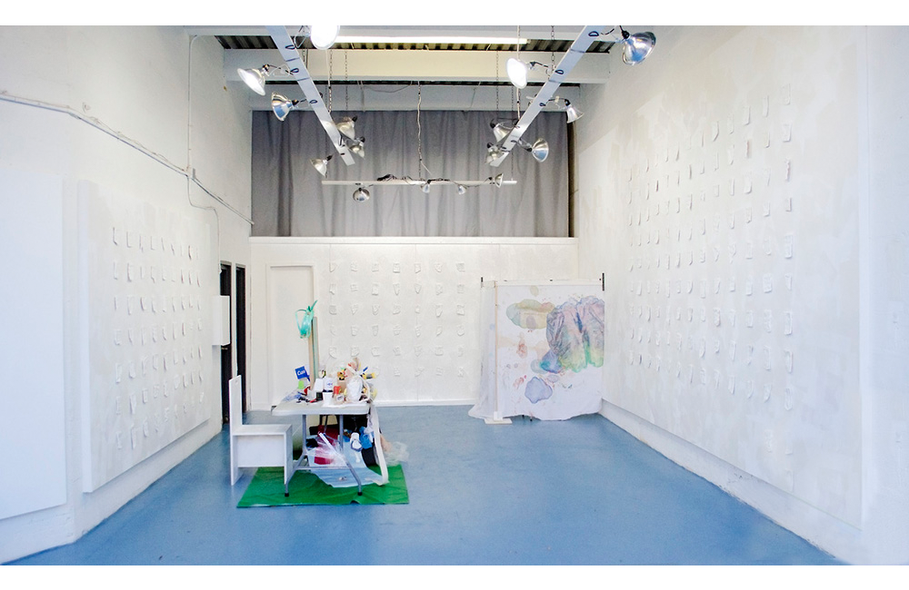
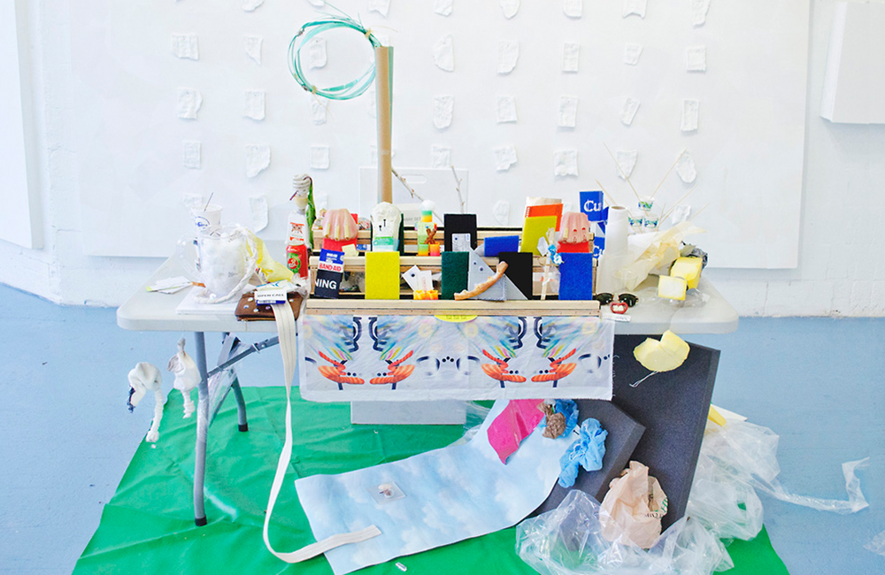
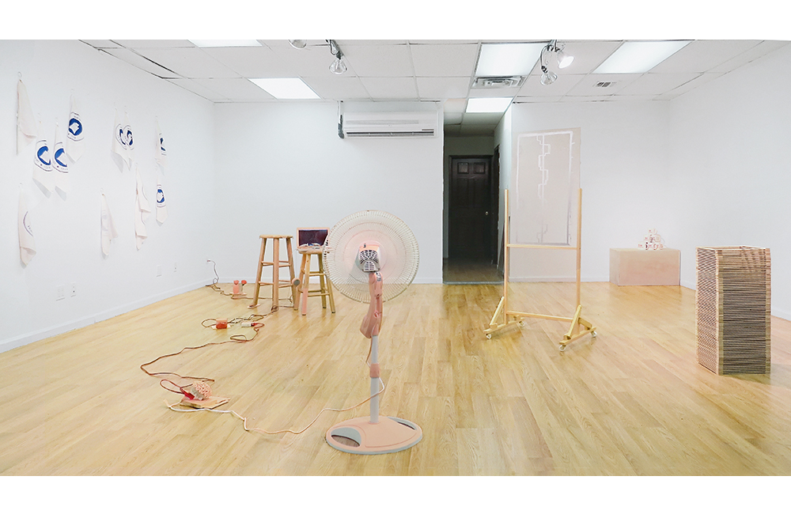
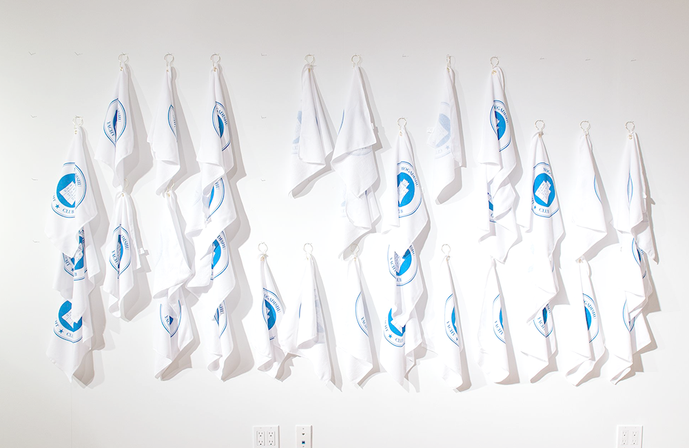
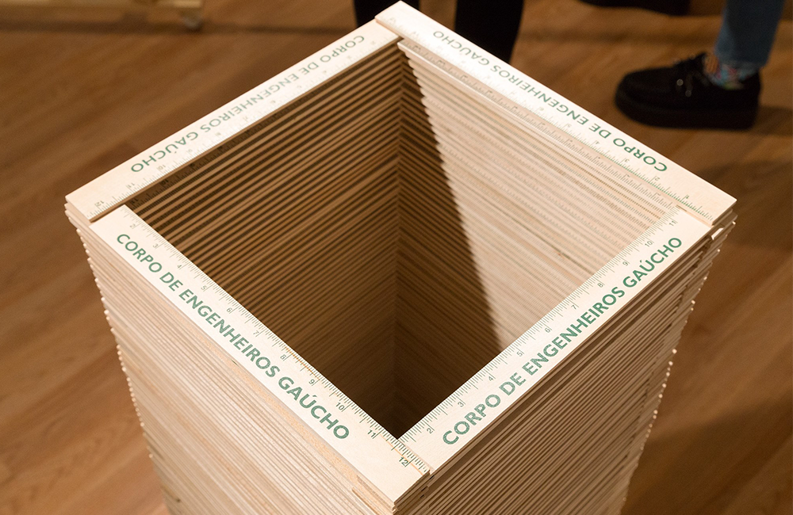

Cura is a semi-annual exhibition that examines the position of artists who curate. For each exhibition we invite three artists to work together to create a collaborative show born out of conversation between the participating artists. Each show is accompanied by an essay on the subject by an invited author. The title of "curator" has historically been reserved for those with advanced degrees in their chosen fields. This institutional backing has given weight to their judgements on what is capital-A "Art" and what isn't. Yet the origin of the word "curate" doesnt stem from a background of academic selection, but rather from the Latin word cura, meaning to care for. A new generation of artists have started performing the role of curator, caring for the work of their peers and creating new collaborative environments. This show emerged from the reality that artists today use curation not only as a form of organization within their communities, but also as an inseparable part of their artistic practice. This shift can be seen as both a positive thing for artists (claiming greater agency over the dissemination of their work), but also as a reflection of the realities of the contemporary labor market—fixed identities are dead, fluid personal enterprises reign supreme. Is the traditional role of the academic curator necessary, or is a new role emerging from the shifting landscape of artists as organizers? At Cura we will explore these questions by making visible the new networks that exist between artists, curators, and their collaborators. Next Cura is scheduled to open Winter, 2016
    